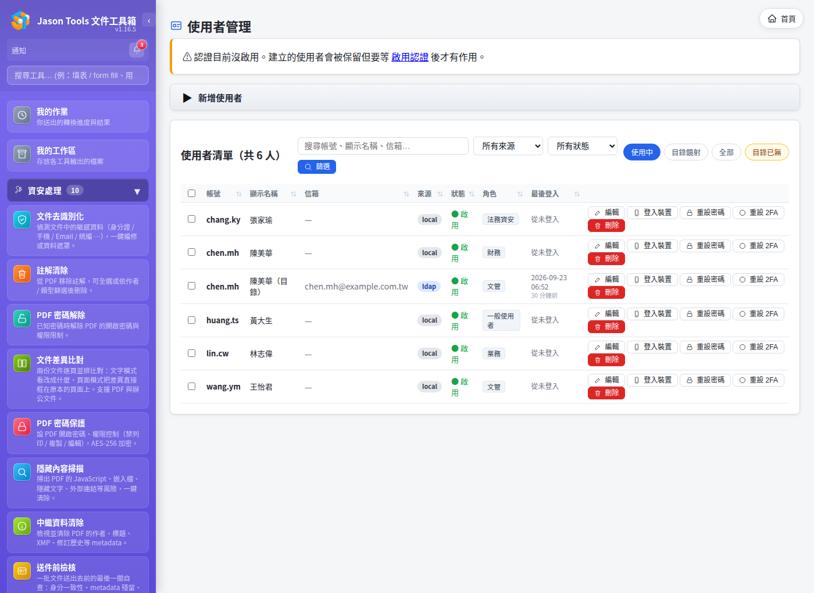
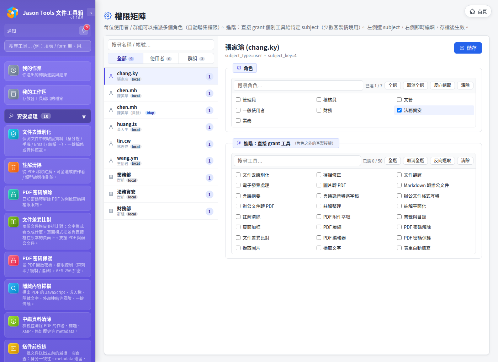
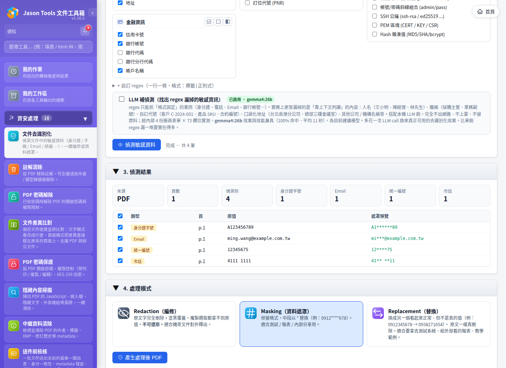
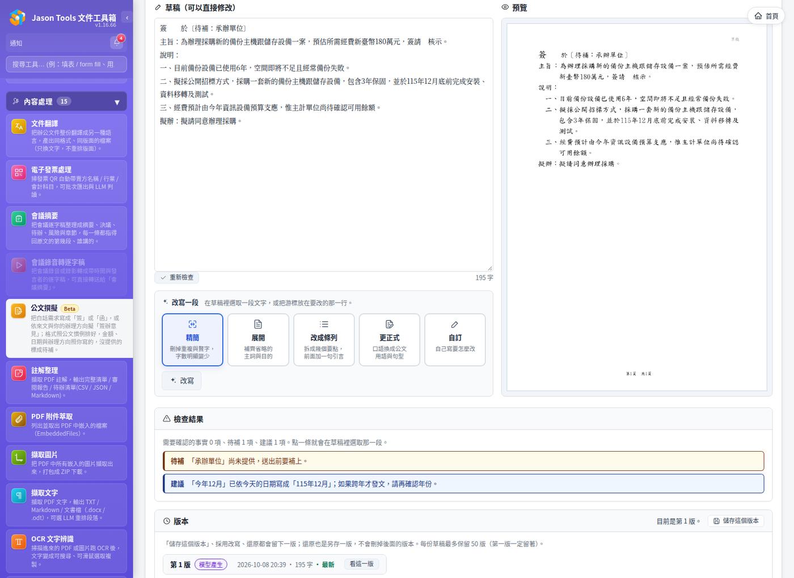

合規支援：ISO/IEC 27001 與 ISO/IEC 42001
ISO/IEC 27001（資訊安全管理）與 ISO/IEC 42001（人工智慧管理）驗證的對象是組織的管理制度，不是軟體。本文件整理 Jason Tools 文件工具箱（以下稱本工具）已經提供的控制功能，以及導入單位如何使用這些功能、在哪裡留下紀錄，作為建立制度與準備稽核證據時的參考。
每一項都對照過程式實際的行為；設定位置以管理區的頁面名稱標示。
一、ISO/IEC 27001：資訊安全
1. 身分認證
| 本工具提供 | 導入單位的做法與紀錄 |
|---|---|
| 本機帳號、LDAP、Active Directory、OIDC 與 SAML 單一登入（可與本機帳號並存） | 在「認證設定」與「SSO 單一登入」接上公司目錄或身分提供者，帳號生命週期由目錄統一管理 |
| 兩步驟驗證（TOTP）；稽核員以帳號密碼登入時一律要求 | 依政策要求使用者啟用；稽核員帳號另外建立並啟用兩步驟驗證 |
| 登入失敗鎖定：同一帳號 10 分鐘內失敗 5 次、或同一來源 IP 失敗 20 次，鎖定 15 分鐘（管理員可調整） | 鎖定與解鎖都寫入稽核記錄（login_fail、account_locked、user_unlock） |
| 登入有效期 7 天，勾選「記住我」為 30 天；管理員可以讓某個帳號的所有登入立即失效 | 依政策調整有效期；帳號疑似外洩時先讓所有登入失效 |

2. 帳號生命週期
| 本工具提供 | 導入單位的做法與紀錄 |
|---|---|
| 停用帳號時，該帳號所有已登入的工作階段立即失效 | 離職或調職流程中停用帳號；稽核記錄有 user_update |
| 啟用認證時，帳號被停用或刪除後，屬於該帳號的 API Token 一律被拒 | 不必另外撤銷 Token 也不會留下可用的存取 |
| 目錄同步可自動停用目錄中已停用或已移除的帳號（預設關閉；單次異動超過 20% 時整批中止，避免誤停） | 在「群組管理」的排程目錄同步開啟；每次執行記錄 user_auto_disable |
| 刪除帳號時一併清除該帳號的工作區檔案 | 稽核記錄有 user_delete |
3. 存取控制與職責分離
| 本工具提供 | 導入單位的做法與紀錄 |
|---|---|
| 以角色授權每一支工具，可指派給個人、群組或 AD 組織單位（OU）；內建管理員、一般使用者、文管、財務、業務、法務資安等角色 | 依職務設計角色；「權限矩陣」頁可檢視誰能用哪些工具 |
| 稽核員角色：只能查看稽核記錄與歷史紀錄，不能使用任何工具；指派稽核員時自動移除其他角色 | 稽核與管理由不同人員擔任 |
| 表單填寫、用印簽名、浮水印的歷史檔案與上傳記錄只有稽核員能查看，管理員不能查看 | 稽核員每次查看都寫入稽核記錄（auditor_view） |
管理員讀取其他使用者的檔案、作業結果或公文案件時寫入稽核記錄（admin_file_override） | 定期檢視這類紀錄 |
角色與權限的每次變更都寫入稽核記錄（perm_change、role_*、user_update 等） | 存取權限審查時以「設定備份匯出」留存當時的角色與權限設定 |

4. 使用者資料隔離
上傳的檔案、背景作業與結果、我的工作區、公文撰擬案件、會議摘要與逐字稿都記錄擁有者。其他帳號無法查看、下載、取消或修改；以編號猜測他人資料一律被拒。這些規則有自動化測試逐項驗證（見 TEST_PLAN_SECURITY.md）。
5. 稽核記錄
| 本工具提供 | 導入單位的做法與紀錄 |
|---|---|
| 記錄登入成功與失敗、鎖定、登出、帳號與群組與角色變更、權限變更、設定變更、工具使用、下載成品、管理員讀取他人檔案、稽核員查看、資料庫備份與毀損、保留期清理 | 「稽核記錄」頁可依使用者、事件類型、時間篩選並匯出 CSV |
| 工具使用只記錄檔名、大小、操作與結果，不記錄檔案內容 | 符合紀錄最小化 |
下載成品（我的作業、工具結果頁、工作區的下載）寫入 file_download：帳號、來源 IP、檔名、大小。同一人同一份檔案五分鐘內只記一筆，預覽與縮圖不記 | 查檔案何時、由誰帶離系統時，以事件類型 file_download 篩選 |
以 API Token 呼叫時，工具使用與下載紀錄會另外寫出 Token 名稱（via: api_token），帳號記為 Token 的持有者 | 每張 Token 指派給專責帳號，並取容易辨識的名稱 |
| 網頁上沒有修改或刪除稽核記錄的功能，只依保留期限自動清理；調整保留期限本身也會留下紀錄 | 依政策設定保留期限（預設 90 天） |
轉送到 SIEM：syslog（RFC 5424）、CEF、GELF，可同時設定多個目的地；送不出去時自動重試，並在本機寫一筆 audit_forward_failed | 在「記錄轉送」設定，長期留存交由 SIEM |
6. 資料留存與清除
下列資料有可設定的保留期限（「檔案保留 / 清理」頁），每 6 小時自動清理一次，管理員也可以立即清理：
| 資料 | 預設保留期限 |
|---|---|
| 暫存上傳檔與處理中的產出 | 2 小時 |
| 背景作業結果 | 24 小時 |
| 作業紀錄 | 30 天 |
| 我的工作區（在「工作區設定」調整） | 24 小時 |
| 表單填寫、用印簽名、浮水印歷史 | 各 365 天 |
| 公文撰擬案件（已刪除的從刪除日起算） | 365 天 |
| 會議錄音轉逐字稿上傳的原始錄音（還在辨識中的不刪） | 30 天 |
| 乘車證明整理 | 365 天 |
| 稽核記錄 | 90 天 |
「系統狀態」頁列出每位使用者目前佔用的檔案數與容量，可以展開看各類別的明細。
7. 機密設定的保護
LLM 伺服器與嵌入服務的金鑰、語音服務的金鑰、OIDC 用戶端密碼與 SAML 私鑰、通知管道的密碼與權杖，都以加密方式存放（Fernet），金鑰檔僅限服務帳號讀取。
8. 文件處理的隔離
| 本工具提供 |
|---|
| Office 轉檔每次使用全新的拋棄式設定檔，並關閉巨集執行 |
| 轉檔有時間上限，逾時連同所有子行程一起終止；以較低的執行優先權與限定的 CPU 核心執行，不影響網頁回應 |
| PDF 隱藏內容掃描在獨立的行程中解析 |
| 毀損的檔案一律回覆錯誤訊息，不會造成伺服器錯誤 |
Linux 安裝以專用的服務帳號執行，並套用 systemd 的保護設定（NoNewPrivileges、PrivateTmp、ProtectSystem=strict、ProtectHome），程式目錄對服務本身唯讀 |
9. 敏感資料處理工具
- 文件去識別化：編修模式會連同遮蔽範圍內的圖片像素一起清除，產出的檔案無法還原被遮蔽的內容（掃描檔與 OCR 後的檔案也一樣）。
- 文字去識別化、中繼資料清除、隱藏內容掃描、PDF 密碼保護。

10. 備份與復原
| 本工具提供 | 導入單位的做法與紀錄 |
|---|---|
| 使用者與權限、稽核記錄兩個資料庫每天自動熱備份，保留 7 份 | 將 db_backups 複製到另一台主機或備份系統留存 |
命令列工具 jtdt db-check、jtdt db-backup、jtdt db-restore：網頁無法使用時也能檢查與還原 | 定期演練還原並記錄結果 |
以 jtdt update 升級時，先檢查磁碟空間並備份資料目錄（保留 3 份）；升級失敗時自動還原程式版本 | 升級紀錄以 CHANGELOG 對照 |
| 「設定備份 / 匯入」：全站設定打包匯出，可在另一台主機匯入 | 搬遷與重建時使用（步驟見 OPS.md） |
11. 網頁與傳輸安全
- 所有寫入操作都要求 CSRF 權杖；內容安全政策（CSP）以每次請求產生的 nonce 限制腳本與樣式來源。
- 經 HTTPS 連線時送出 HSTS；登入用的 cookie 標示
HttpOnly，經 HTTPS 連線時另外標示Secure。 - 部署說明建議以反向代理提供 HTTPS，服務本身只綁本機（見
OPS.md）。
12. 安全開發與測試
- 每次發行前執行 OWASP ZAP 掃描（未登入與已登入），高、中、低風險項目修正為 0 才發行。
- 以 bandit 做靜態掃描，並有 OWASP Top 10 回歸測試；資安測試項目整理在
TEST_PLAN_SECURITY.md。 - 每一版的變更記錄在
CHANGELOG.md。
二、ISO/IEC 42001：人工智慧
1. AI 功能清冊
| 本工具提供 | 導入單位的做法與紀錄 |
|---|---|
| LLM 加值功能預設關閉，由管理員在「LLM 設定」啟用 | 以「LLM 設定」頁作為 AI 功能清冊，記錄啟用的工具、模型與伺服器 |
| 會呼叫 LLM 的工具都列在「LLM 設定」：逐句翻譯、文件翻譯、擷取文字（段落重排）、表單自動填寫（校驗）、文件與文字去識別化（補偵測）、會議摘要、公文撰擬、字數統計、註解整理、文件差異比對、送件前檢核、OCR 文字辨識、電子發票 | 依用途核准；不需要的工具不啟用 |
| 每支工具可指定使用哪一台 LLM 伺服器；指定的伺服器不可用時直接停止，不會改送到其他伺服器 | 機密等級高的工具指定地端伺服器 |
| OCR 預設在本機辨識（EasyOCR）；另外架設的 GPU OCR 伺服器為選用，預設關閉 | 啟用前確認伺服器位置 |
| 會議錄音轉逐字稿使用另外架設的語音服務：對方以 2 小時內有效的簽章網址取得錄音，逐字稿取回並存檔後通知對方刪除（最晚 24 小時） | 語音服務的位置與留存方式列入資料流紀錄 |
2. 降低 AI 產出錯誤的機制
| 功能 | 本工具提供 |
|---|---|
| 公文撰擬 | 格式由程式排定，模型只寫內容；自動檢查草稿裡的金額、數量、日期、時間、法規名稱、條號、文號與核准狀態，原文找不到依據的標出來；缺少的資料標成〔待補〕；參考資料標示用途與出處，只有「業務依據」算草稿的依據；每次修改都存成新版本 |
| 會議摘要 | 每一條決議、待辦、風險都要指回逐字稿的段落，指不回去的不列出；摘要只根據已驗證的項目撰寫，並檢查數字與英文詞在原文裡是否出現 |
| 翻譯 | 原文與譯文逐句或並排對照，方便覆核 |
| OCR 校正 | 逐行對齊比對，行數或字數差太多的行不套用模型的修正 |
| 提示詞注入 | 公文撰擬在送給模型前移除夾帶在文件裡、寫給 AI 的指令並提醒使用者；公文撰擬與會議摘要的提示把文件內容放在資料區，並聲明那是資料不是指令 |

3. 導入單位的做法
- 訂定 AI 使用政策：哪些工具可以用、哪一類文件可以送到哪一台模型伺服器。
- 把本工具的檢查結果納入人工覆核：公文撰擬的「檢查結果」、會議摘要的段落引用、翻譯的對照。正式文件由承辦人確認後才使用。
- 換模型或升級版本前，用自己的代表性文件重跑一次並留存結果，作為變更紀錄。
- 依用途評估錯誤可能影響的對象（文件的收受者、個資當事人、員工），列入 AI 影響評估。
三、導入時的檢查清單
- 啟用認證，接上公司目錄或單一登入；另外建立稽核員帳號並啟用兩步驟驗證。
- 依職務設定角色與工具權限；以「設定備份匯出」留存每次存取審查時的設定。
- 設定稽核記錄轉送到 SIEM，並依政策設定各類資料的保留期限。
- 以反向代理提供 HTTPS，服務本身只綁本機。
- 將資料庫備份與設定備份複製到另一台主機留存，定期演練還原。
- 啟用 LLM 前決定每支工具使用的伺服器，以「LLM 設定」頁作為 AI 功能清冊。
- 升級時留存
CHANGELOG.md對應版本的說明，作為變更管理紀錄。